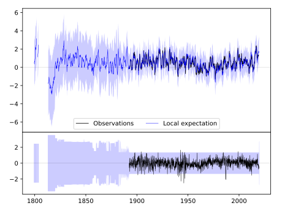
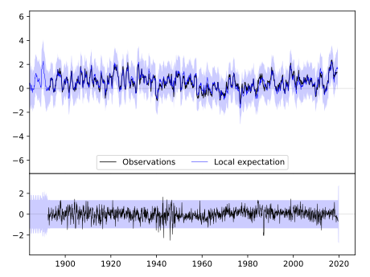
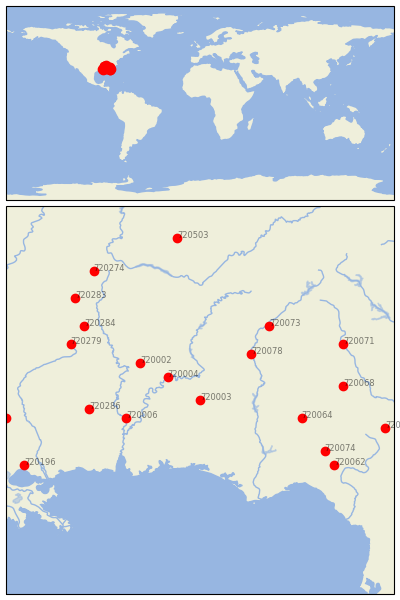

HIGHLAND HOME [USA]


| Neighbour | Name | Country | Distance | Lon/Lat | Years |
|---|
| 720003 | HIGHLAND HOME | USA | 0 | -86.3, 31.9 | 1891-2019 |
| 720004 | SELMA | USA | 86 | -87.0, 32.4 | 1858-2019 |
| 720002 | GREENSBORO | USA | 151 | -87.6, 32.7 | 1856-2019 |
| 720078 | WEST POINT | USA | 151 | -85.2, 32.9 | 1882-2019 |
| 720006 | THOMASVILLE | USA | 157 | -87.9, 31.5 | 1891-2019 |
| 720064 | ALBANY 3 SE | USA | 212 | -84.1, 31.5 | 1878-2019 |
| 720073 | NEWNAN 5N | USA | 226 | -84.8, 33.5 | 1882-2019 |
| 720286 | WAYNESBORO 2 W | USA | 227 | -88.7, 31.7 | 1882-2019 |
| 720074 | QUITMAN 2 NW | USA | 284 | -83.6, 30.8 | 1882-2019 |
| 720284 | STATE UNIV | USA | 293 | -88.8, 33.5 | 1886-2019 |
| 720068 | EASTMAN 1 W | USA | 294 | -83.2, 32.2 | 1882-2019 |
| 720279 | LOUISVILLE | USA | 294 | -89.1, 33.1 | 1888-2019 |
| 720062 | MADISON | USA | 316 | -83.4, 30.5 | 1889-2019 |
| 720071 | MILLEDGEVILLE | USA | 319 | -83.2, 33.1 | 1878-2019 |
| 720283 | PONTOTOC EXP STN | USA | 351 | -89.0, 34.1 | 1889-2019 |
| 720274 | BOONEVILLE | USA | 377 | -88.6, 34.7 | 1889-2019 |
| 720077 | WAYCROSS 4 NE | USA | 384 | -82.3, 31.3 | 1882-2019 |
| 720503 | LEWISBURG EXP STN | USA | 391 | -86.8, 35.4 | 1888-2019 |
| 720196 | COVINGTON 4 NNW | USA | 393 | -90.1, 30.5 | 1893-2019 |
| 720275 | BROOKHAVEN CITY | USA | 399 | -90.5, 31.5 | 1892-2019 |